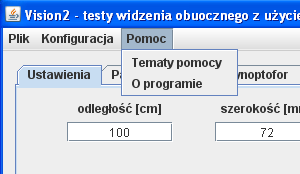
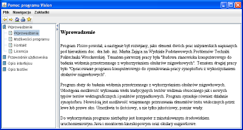

Menu "Pomoc"
Wygląd menu "Pomoc" przedstawiono na rys.1. Zawiera ono następujące opcje:
- Tematy pomocy: Wybranie spowoduje wyświetlenie okna z pomocą, przedstawionego na rysunku 1.
- O programie: Wybranie spowoduje wyświetlenie wersji programu oraz daty kompilacji.

Rys.1 Menu "Help"

Rys.2 Okno "Pomoc programu Vision2"